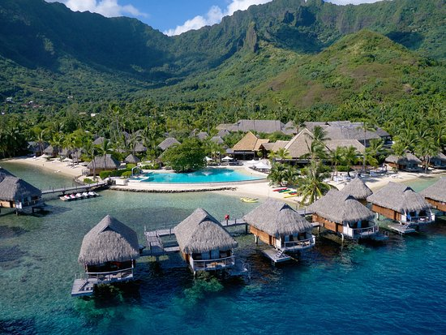

Tropical Destinations

Get Ready To explore the world
Beautifully blessed with sun-kissed climates that last all year round, tropical destinations are countries found on or near the Equator, surrounded by lush ecosystems, geographical wonders, and stunning beaches. With only two seasons the wet and dry climates these locations are perfectly tempered for summery getaways. The eternally humid weather lures you to wade into the cool waters and partake the rich vegetation surrounding the shores. For a dream getaway, we have listed the best tropical vacations on the planet, where you can escape the chill of winter and bask in the warm sunshine whenever you wish.
The southern tip of the African continent boasts expansive natural topography with a semi-desert atmosphere. World-class cities thriving with some of the best landscapes in the world make this location popular for elite tourists and ardent backpackers alike. UNESCO World Heritage sites display South Africa's role in human history, while forests and mountain ranges let you immerse in the authentic feel of nature.